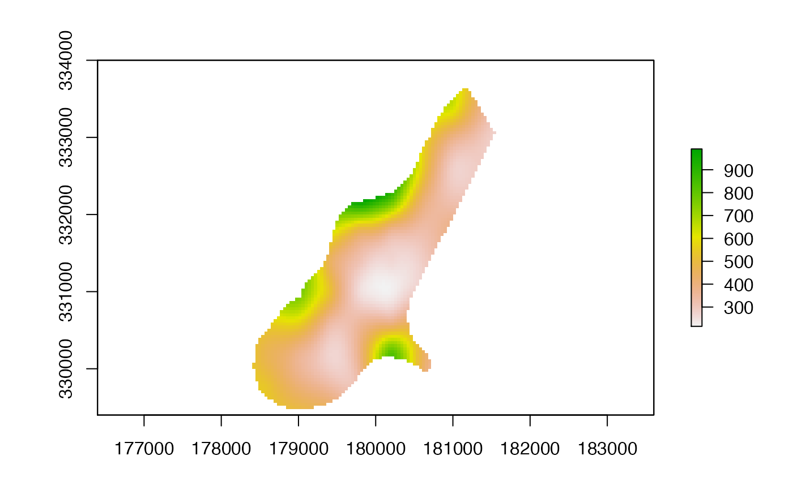
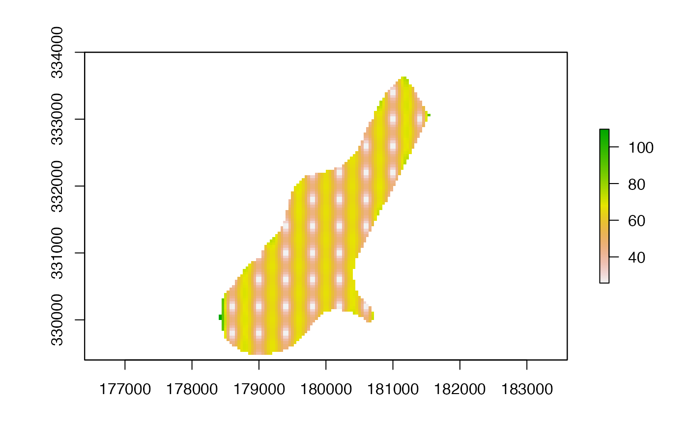
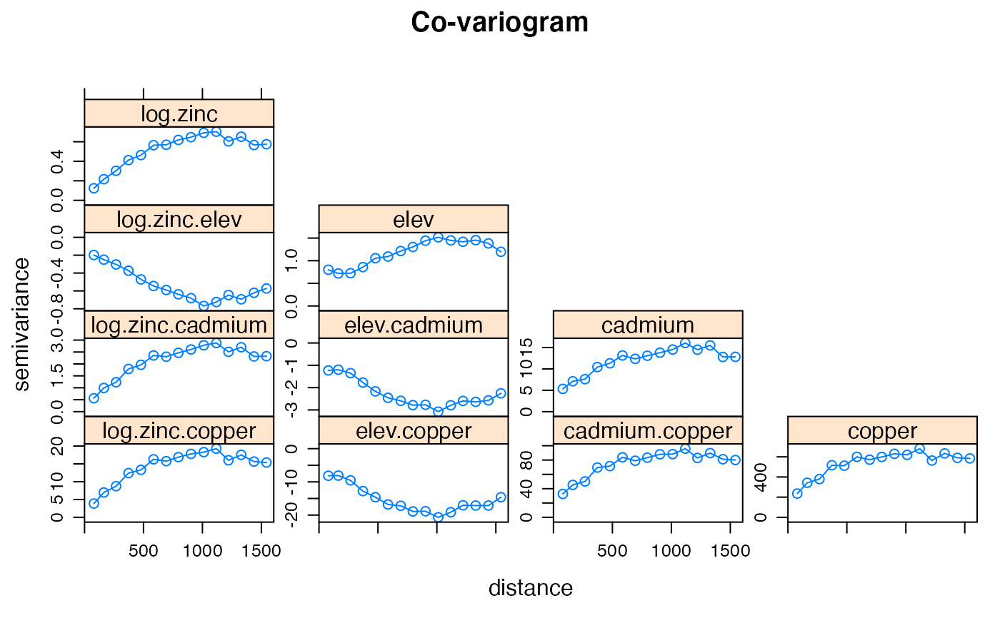
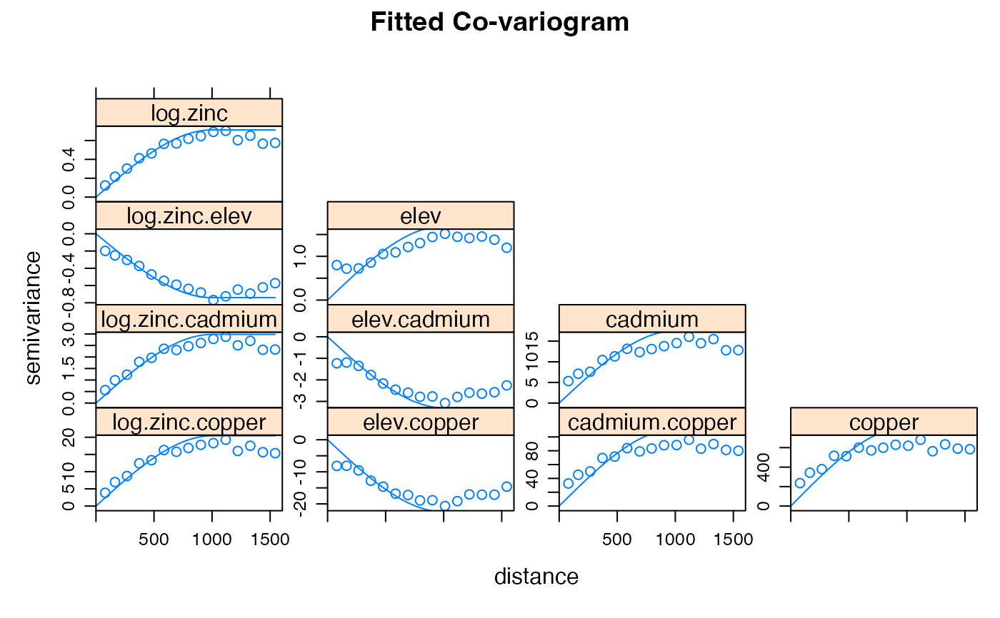
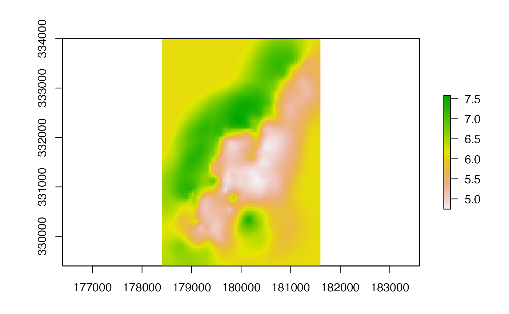

interpolate.RdMake a RasterLayer with interpolated values using a fitted model object of classes such as 'gstat' (gstat package) or 'Krige' (fields package). That is, these are models that have location ('x' and 'y', or 'longitude' and 'latitude') as independent variables. If x and y are the only independent variables provide an empty (no associated data in memory or on file) RasterLayer for which you want predictions. If there are more spatial predictor variables provide these as a Raster* object in the first argument of the function. If you do not have x and y locations as implicit predictors in your model you should use predict instead.
# S4 method for Raster
interpolate(object, model, filename="", fun=predict, xyOnly=TRUE,
xyNames=c('x', 'y'), ext=NULL, const=NULL, index=1, na.rm=TRUE, debug.level=1, ...)Raster* object
model object
character. Output filename (optional)
function. Default value is 'predict', but can be replaced with e.g. 'predict.se' (depending on the class of the model object)
logical. If TRUE, values of the Raster* object are not considered as co-variables; and only x and y (longitude and latitude) are used. This should match the model
character. variable names that the model uses for the spatial coordinates. E.g., c('longitude', 'latitude')
Extent object to limit the prediction to a sub-region of x
data.frame. Can be used to add a constant for which there is no Raster object for model predictions. This is particulary useful if the constant is a character-like factor value
integer. To select the column if 'predict.model' returns a matrix with multiple columns
logical. Remove cells with NA values in the predictors before solving the model (and return NA for those cells). In most cases this will not affect the output. This option prevents errors with models that cannot handle NA values
for gstat models only. See ?
additional arguments passed to the predict.'model' function
Raster* object
# \donttest{
## Thin plate spline interpolation with x and y only
# some example data
r <- raster(system.file("external/test.grd", package="raster"))
ra <- aggregate(r, 10)
xy <- data.frame(xyFromCell(ra, 1:ncell(ra)))
v <- getValues(ra)
# remove NAs
i <- !is.na(v)
xy <- xy[i,]
v <- v[i]
#### Thin plate spline model
library(fields)
#> Loading required package: spam
#> Loading required package: dotCall64
#> Loading required package: grid
#> Spam version 2.7-0 (2021-06-25) is loaded.
#> Type 'help( Spam)' or 'demo( spam)' for a short introduction
#> and overview of this package.
#> Help for individual functions is also obtained by adding the
#> suffix '.spam' to the function name, e.g. 'help( chol.spam)'.
#>
#> Attaching package: ‘spam’
#> The following objects are masked from ‘package:base’:
#>
#> backsolve, forwardsolve
#> Loading required package: viridis
#> Loading required package: viridisLite
#>
#> Try help(fields) to get started.
tps <- Tps(xy, v)
p <- raster(r)
# use model to predict values at all locations
p <- interpolate(p, tps)
p <- mask(p, r)
plot(p)

## change the fun from predict to fields::predictSE to get the TPS standard error
se <- interpolate(p, tps, fun=predictSE)
se <- mask(se, r)
plot(se)

## another variable; let's call it elevation
elevation <- (init(r, 'x') * init(r, 'y')) / 100000000
names(elevation) <- 'elev'
z <- extract(elevation, xy)
# add as another independent variable
xyz <- cbind(xy, z)
tps2 <- Tps(xyz, v)
p2 <- interpolate(elevation, tps2, xyOnly=FALSE)
# as a linear coveriate
tps3 <- Tps(xy, v, Z=z)
# Z is a separate argument in Krig.predict, so we need a new function
# Internally (in interpolate) a matrix is formed of x, y, and elev (Z)
pfun <- function(model, x, ...) {
predict(model, x[,1:2], Z=x[,3], ...)
}
p3 <- interpolate(elevation, tps3, xyOnly=FALSE, fun=pfun)
#### gstat examples
library(gstat)
data(meuse)
## inverse distance weighted (IDW)
r <- raster(system.file("external/test.grd", package="raster"))
data(meuse)
mg <- gstat(id = "zinc", formula = zinc~1, locations = ~x+y, data=meuse,
nmax=7, set=list(idp = .5))
z <- interpolate(r, mg)
#> [inverse distance weighted interpolation]
z <- mask(z, r)
## kriging
coordinates(meuse) <- ~x+y
crs(meuse) <- crs(r)
## ordinary kriging
v <- variogram(log(zinc)~1, meuse)
m <- fit.variogram(v, vgm(1, "Sph", 300, 1))
gOK <- gstat(NULL, "log.zinc", log(zinc)~1, meuse, model=m)
OK <- interpolate(r, gOK)
#> [using ordinary kriging]
# examples below provided by Maurizio Marchi
## universial kriging
vu <- variogram(log(zinc)~elev, meuse)
mu <- fit.variogram(vu, vgm(1, "Sph", 300, 1))
gUK <- gstat(NULL, "log.zinc", log(zinc)~elev, meuse, model=mu)
names(r) <- 'elev'
UK <- interpolate(r, gUK, xyOnly=FALSE)
#> [using universal kriging]
## co-kriging
gCoK <- gstat(NULL, 'log.zinc', log(zinc)~1, meuse)
gCoK <- gstat(gCoK, 'elev', elev~1, meuse)
gCoK <- gstat(gCoK, 'cadmium', cadmium~1, meuse)
gCoK <- gstat(gCoK, 'copper', copper~1, meuse)
coV <- variogram(gCoK)
plot(coV, type='b', main='Co-variogram')

coV.fit <- fit.lmc(coV, gCoK, vgm(model='Sph', range=1000))
coV.fit
#> data:
#> log.zinc : formula = log(zinc)`~`1 ; data dim = 155 x 12
#> elev : formula = elev`~`1 ; data dim = 155 x 12
#> cadmium : formula = cadmium`~`1 ; data dim = 155 x 12
#> copper : formula = copper`~`1 ; data dim = 155 x 12
#> variograms:
#> model psill range
#> log.zinc Sph 0.7132435 1000
#> elev Sph 1.6908552 1000
#> cadmium Sph 17.4957356 1000
#> copper Sph 809.4027563 1000
#> log.zinc.elev Sph -0.7404289 1000
#> log.zinc.cadmium Sph 2.9802854 1000
#> elev.cadmium Sph -3.2983554 1000
#> log.zinc.copper Sph 20.4199742 1000
#> elev.copper Sph -22.4955673 1000
#> cadmium.copper Sph 111.1393673 1000
plot(coV, coV.fit, main='Fitted Co-variogram')

coK <- interpolate(r, coV.fit)
#> Intrinsic Correlation found. Good.
#> [using ordinary cokriging]
plot(coK)

# }